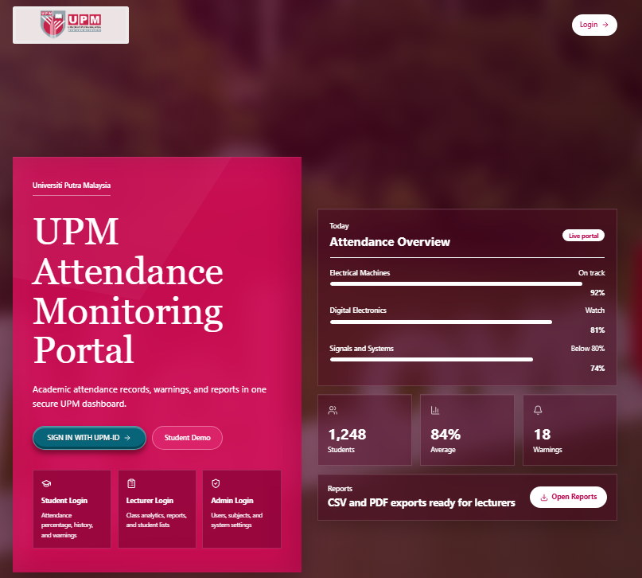
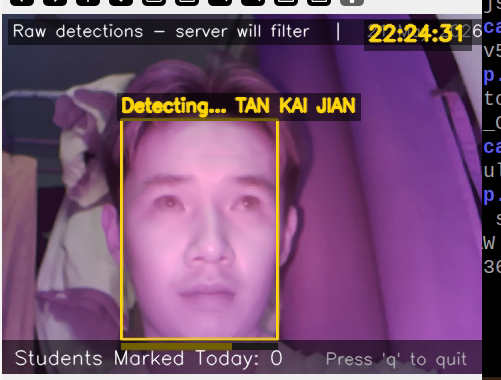
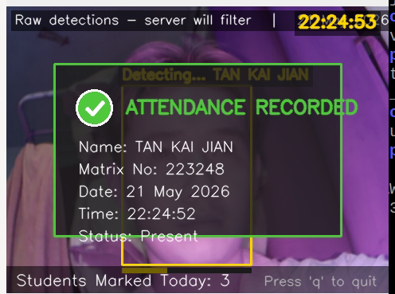
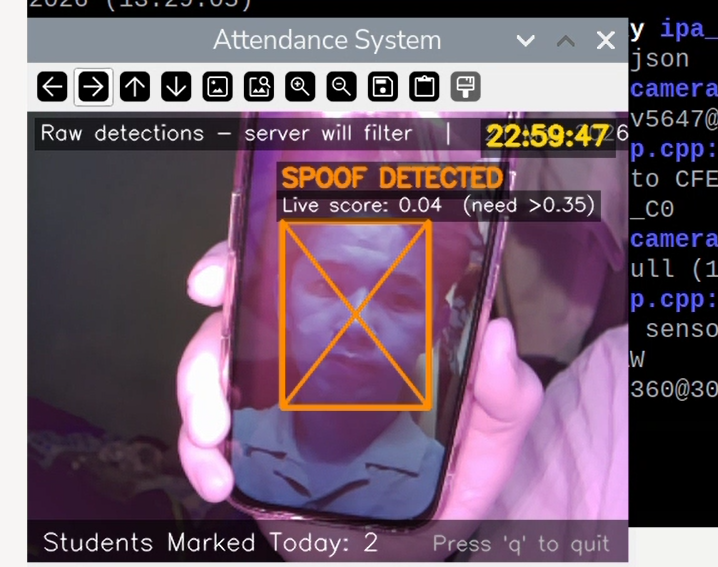
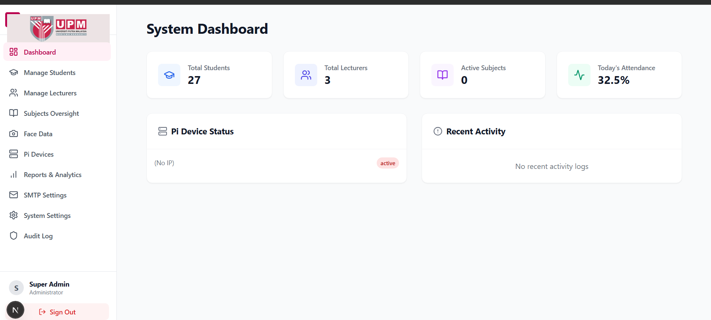

🎓 Automated Contactless Attendance System


📌 Introduction
This project develops an Automated Face Recognition Attendance System to improve the efficiency of classroom attendance recording. Traditional methods such as paper sign-in, card scanning, and fingerprint systems can be time-consuming, inaccurate, or vulnerable to proxy attendance. The proposed system uses a Raspberry Pi 5, camera input, MTCNN face detection, FaceNet recognition, and anti-spoofing detection to identify students and record attendance automatically in a contactless way.
📸 System in Action
Our edge-computing software runs seamlessly in real-time, handling detection, validation, and logging instantly.



⚙️ System Architecture & Workflow
Our system integrates a robust hardware-software ecosystem to ensure seamless, real-time tracking.
- Detection & Alignment: Uses OpenCV and MTCNN to locate the largest face in the camera frame, then aligns it to a 160x160 crop.
- Liveness Validation: Passes the frame through an ONNX Anti-Spoofing Model (using threaded inference) to block photos or digital screens.
- Embedding & Matching: A FaceNet / InceptionResnetV1 model generates a 512-D face embedding. We use a Cosine Similarity Threshold of 0.82 to verify the student's identity against the database.
Once confirmed, attendance is categorized as Present or Late based on the timetable. Data is instantly logged to a local CSV and an SQLite database, then pushed through a FastAPI backend and Cloudflare Tunnel to our live Web Attendance Portal.

✨ Key Features
- ✅ Timetable Detection: Automatically classifies attendance status based on real-time scheduling.
- 🛡️ Bulletproof Security: Hardware-level frame skipping and liveness detection prevent spoofing attempts.
- 💻 Admin Dashboard: Comprehensive web portal for lecturers to view records, monitor live analytics, and manage student registration.
👨💻 Meet the Team
- Developers: Chan Jian Xiang, Chan Kai Tong, Tan Kai Jian, and Wong Yong Zheng
- Lecturer: Prof. Ts. Dr. Wan Zuha Wan Hasan
- Supervisor: Prof. Madya Dr. Noor 'Ain Binti Kamsani